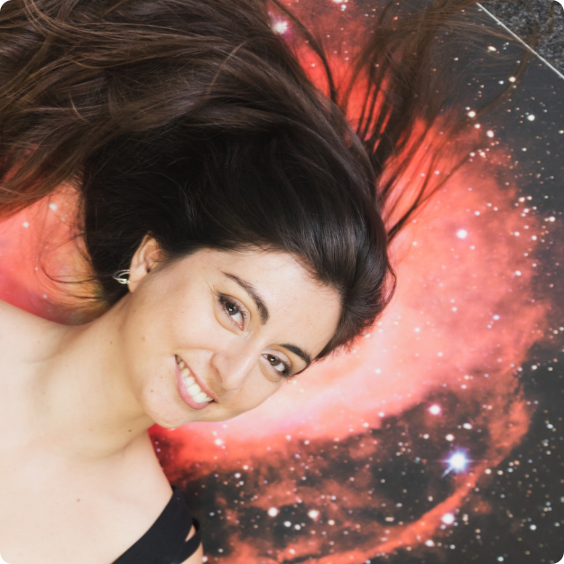
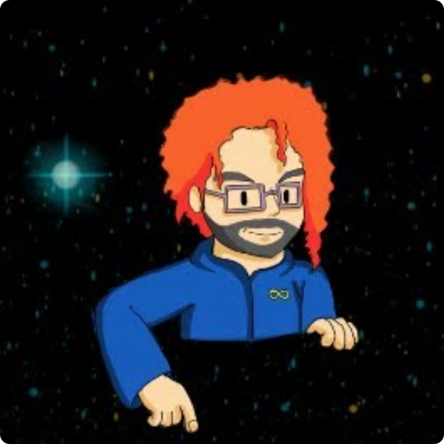

Cosmoneo
« Cosmoneo » est un outil pédagogique innovant, conçu pour favoriser un apprentissage interactif et approfondi des concepts astronomiques et scientifiques.
Jouer en ligne
Cosmoneo a désormais une version en ligne sur Sofi Games. Ses règles suivent la vraie physique des étoiles : les étoiles naissent du gaz qui les entoure, les étoiles massives meurent jeunes, les supernovas balaient le gaz en coquilles riches en métaux, et les générations suivantes peuvent former des planètes. On peut y jouer contre des bots, en français, en anglais ou en espagnol.
Jouer à Cosmoneo sur sofi.games →
Découvrez comment fonctionne Cosmoneo :
Équipe
Rodrigo Leiva - Astronome spécialiste du Système solaire et de la médiation scientifique.

Sofía Gallego - Astronome, artiste et responsable du projet Cosmoneo.

Olemma Leyton - Acteur·ice, astronome et spécialiste de la médiation scientifique.
Partenaires
Nous travaillons avec des organisations comme Astromania pour élargir la portée éducative de Cosmoneo.
Jeu de plateau
Premier produit du projet, Cosmoneo adopte une approche ludique pour enseigner les processus de l’Univers et faciliter l’apprentissage de l’évolution stellaire, entre autres.
Matériel et déroulement du jeu
Le jeu comprend des cartes Étoile et Évolution, un plateau hexagonal, des dés et des jetons de gaz qui simulent la masse du gaz. Ces éléments servent à représenter et à calculer les déplacements et les transformations au fil de la partie, pour une expérience pédagogique interactive et très riche en contenu.
Conclusion
Au-delà du jeu, Cosmoneo est une plateforme éducative qui enrichit la compréhension de l’astronomie et fait de l’apprentissage une aventure passionnante et instructive.